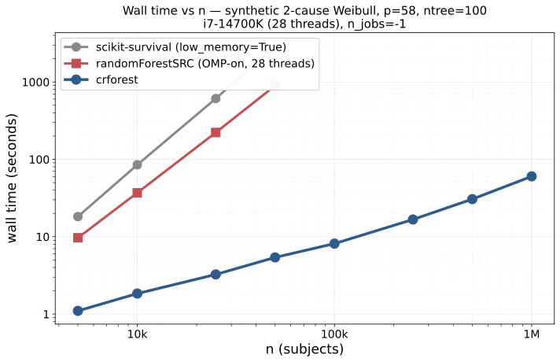

comprisk benchmarks¶
This is the full benchmark dossier for comprisk. The repo's README links here for the detailed tables, methodology, and reproducibility scripts.
All numbers below are measured, not extrapolated, except where the
table cell says otherwise (e.g., sksurv extrapolations in the Scaling
section). Every benchmark has a reproducibility script in validation/
that any reviewer with the cited cohort access can rerun.
vs randomForestSRC, matched-pair across hardware¶
Real CHF cohort, HF / death competing risks; tens of thousands of training rows and several dozen features, ntree = 100, leaf = 3, nsplit = 10, seeds 42–44 (mean wall):
| Hardware | comprisk (n_jobs=-1) |
rfSRC OMP-on | Speedup | RSS ratio |
|---|---|---|---|---|
| Apple M4 (10-core, 16 GB) | 9.42 s | 207.3 s | 22.0× | — |
| Intel i7-14700K (28-thread, 32 GB) | 5.79 s | 84.75 s | 14.6× | 3.7× less |
| HPC Xeon Gold 6148 (32-core, 187 GB) | 5.61 s | 111.05 s | 19.8× | 3.6× less |
Both libraries report HF C-index ≈ 0.85 at this workload — comprisk
0.864 (cause-specific Wolbers concordance), rfSRC 0.847–0.849 (rfSRC's
own native cause-specific C from err.rate). These are computed from
different code paths and should not be subtracted directly; both are
well above paper-grade thresholds and confirm the libraries fit
similarly well. The 14–22× speedup band reflects how rfSRC's OpenMP
scales with per-core speed: the i7's high-clock P-cores benefit rfSRC
most, so the gap is smallest there; on slower-per-core HPC silicon the
gap widens. Reproducible via
validation/comparisons/n75k_path_b.py.
R-on-macOS users hit a separate scenario: rfSRC's OpenMP requires rebuilding R against Homebrew gcc/clang, which most Mac R installs lack. On a 10-core Apple M4, rfSRC built without OpenMP runs at ~895 s vs comprisk 9.42 s = ~95× speedup at the default install path.
Cross-dataset validation (SEER breast cancer)¶
n = 238 057 train / p = 17, ntree = 100, leaf = 3, nsplit = 10, seeds 42–44; HPC Xeon Gold 6148 (32 cores, 187 GB), full cohort matched-pair:
| Lib | Wall (mean ± std) | Peak RSS | Harrell C₁ | Harrell C₂ |
|---|---|---|---|---|
comprisk (n_jobs=-1) |
7.02 ± 0.31 s | 8.83 GB | 0.8652 | 0.8370 |
rfSRC OMP-on (rf.cores=32) |
81.56 ± 3.40 s | 55.17 GB | 0.8450 | 0.8090 |
| Speedup / ratio | 11.6× | 6.25× less | — | — |
C-index columns are listed using each library's own native scorer
(comprisk: cause-specific Wolbers concordance; rfSRC: native
err.rate-derived cause-specific C). They come from different code
paths and should not be subtracted directly; both report C ≈ 0.85
which is the durable claim. The SEER speedup (11.6×) is materially
smaller than CHF's 19.8× on the same HPC silicon because rfSRC's
per-split exhaustive scan scales with p, and SEER has roughly three times
fewer features; the 10–22× cross-dataset band tracks p directly. Reproducible via
validation/comparisons/seer_path_b.py
(requires your own SEER Research Data agreement; setup in
validation/comparisons/SEER_README.md).
Scaling on the synthetic Weibull DGP¶

Three libraries on identical synthetic data: comprisk sub-linear (≈ n^0.7), rfSRC and sksurv super-linear (rfSRC ≈ n^2.0, sksurv ≈ n^2.2). At n = 50k comprisk beats rfSRC by ~166× and sksurv by ~544× on this DGP. The synthetic gap is much larger than what comprisk delivers on real EHR-shaped data (the matched-pair section above reports 14–22× on CHF and 11.6× on SEER) — this is expected: synthetic all-Gaussian features give rfSRC no fast path, while real EHR data is binary-heavy, which rfSRC's exhaustive split scan handles relatively well.
vs scikit-survival, paired same machine¶
i7-14700K, 28 threads, synthetic 2-cause Weibull DGP at the CHF cohort's feature width,
ntree = 100, both libraries at their best config (n_jobs=-1; sksurv
low_memory=True):
| n | sksurv low_memory=True |
comprisk | speedup |
|---|---|---|---|
| 5 000 | 18.2 s / 0.22 GB peak RSS | 1.10 s / 1.62 GB | 16.6× |
| 10 000 | 85.0 s / 0.26 GB | 1.84 s / 2.69 GB | 46.2× |
| 25 000 | 609.7 s / 0.37 GB | 3.25 s / 3.99 GB | 187.6× |
| 50 000 | 2 935.3 s (49 min) / 0.55 GB | 5.40 s / 5.67 GB | 543.6× |
The wall-time gap widens with n (sksurv RSF wall scales ≈ n^2.2 with
default min_samples_leaf=3; comprisk histogram split kernel ≈ n^0.7).
At every paired point comprisk also provides Aalen-Johansen CIF,
Nelson-Aalen CHF, and risk scores; sksurv low_memory=True provides
only predict() risk scores — predict_cumulative_hazard_function and
predict_survival_function raise NotImplementedError. When both are
scored on the single-event-collapsed truth sksurv is fit on, holdout
Harrell C-index is matched within ±0.01 across n; comprisk additionally
surfaces a cause-specific Wolbers concordance of 0.69–0.72 for cause 1
(HF) that sksurv has no way to compute on competing-risk data. Sksurv's
other mode (low_memory=False) restores CHF/survival outputs but OOMs:
at n = 5k it already peaks at 16.8 GB RSS; at n = 10k it exceeds a 21.5
GB cap on a 24 GB host. Numbers reproducible via
validation/comparisons/sksurv_oom.py.
Scaling (one-sided beyond the paired ranges)¶
Same consumer desktop as the paired benches above (i7-14700K, 28 threads). comprisk exhibits sub-linear wall growth in n with the histogram split kernel:
| Workload (default config, ntree = 100) | comprisk CPU wall | rfSRC | sksurv |
|---|---|---|---|
| n = 75 000 (real CHF, paired on i7) | 5.79 s | 84.75 s | extrapolated ~2.4 hr (low_memory=True); low_memory=False exceeds 21.5 GB at n = 10k already |
| n = 238 057 (real SEER, paired on HPC) | 7.02 s | 81.56 s | extrapolated ~12 hr (n^2.2 from the n = 50k data point) |
| n = 1 000 000 (UKB-scale feasibility, on i7) | 63 s | not measured (rfSRC peak RSS at n = 75 000 already 22.7 GB OMP-on; rfSRC's per-tree storage roughly doubles with n) | not feasible at full output capability |
The n = 1M number reproduces via
validation/spikes/lambda/exp5_paper_scale_bench.py.
We do not publish a paired number above n ≈ 100 000 because both R and
Python alternatives are impractical there, not because the comparison
gets unfavourable.
Even when forced to
n_jobs=1, comprisk stays fast: the histogram split kernel is numba-compiled, so a single-thread fit uses the same hot loop as the parallel one (just without the joblib fan-out). That matters for environments where worker pools are forbidden — Jupyter notebooks under certain spawn configs, locked-down HPC schedulers, nested-parallel pipelines, etc.
The compact leaf storage (per-cause integer event/at-risk counts only; CIF/CHF tables materialise lazily on first predict) keeps pickle size proportional to the cohort: n = 100k, ntree = 100 pickles to ~5.0 GB.
Reproducing every number¶
| Claim | Script | Cohort access required? |
|---|---|---|
| CHF matched-pair (3 hardware rows) | validation/comparisons/n75k_path_b.py |
Yes — see validation/spikes/kappa/exp1_chf_smoke.py for the cohort vendoring step |
| SEER cross-dataset matched-pair | validation/comparisons/seer_path_b.py |
Yes — own SEER Research Data agreement; setup in validation/comparisons/SEER_README.md |
| sksurv comparison (4 n rows) | validation/comparisons/sksurv_oom.py |
No — synthetic DGP |
| n = 10⁶ scaling | validation/spikes/lambda/exp5_paper_scale_bench.py |
No — synthetic DGP |
For cross-library equivalence checks (bit-identical to rfSRC at fixed
seed via equivalence="rfsrc"), see
docs/equivalence-vs-rfsrc.md.